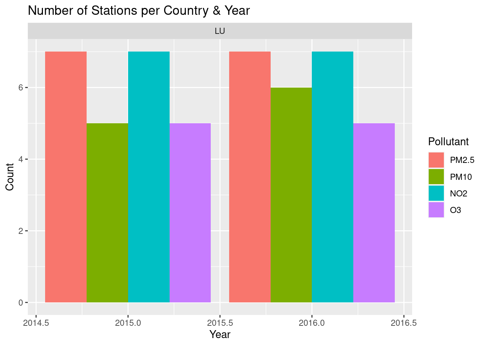

suppressPackageStartupMessages({
library(dplyr)
library(tidyr)
library(sf)
})
source("R/functions.R")Download EEA AQ Station Data
Download
Construct URLS like the EEA discomap service that return links to all matching AQ station data CSV files. CSVs each contain stations from 1 country for 1 year and 1 pollutant. generate_download_urls() first generates a request, executes it, and writes all matching URLs to file. These can be picked up by check_station_urls() to get corresponding country, year, pollutant, and station ID for each entry. Data is finally retrieved with download_station_data().
Download AQ data for 3 countries of interest and 4 pollutants of interest:
- Netherlands, Belgium, Luxembourg
- NO2, O3, PM10, PM2.5
countries = c("LU")
pollutants = c(7,8,5,6001)
dl_file = "tests/test_download_urls.txt"
generate_download_urls(countries, pollutants, 2015, 2016, file = dl_file)Generated 49 station URLs from 1 countries and 4 pollutants between 2015 and 2016URLs are written to file: tests/test_download_urls.txtcheck_station_urls(dl_file)
files = download_station_data(dl_file, "tests/download")
head(files) Country Pollutant Year Station File
1 LU O3 2015 27196 LU_7_27196_2015_timeseries.csv
2 LU O3 2015 27112 LU_7_27112_2015_timeseries.csv
3 LU O3 2015 27176 LU_7_27176_2015_timeseries.csv
4 LU O3 2015 27126 LU_7_27126_2015_timeseries.csv
5 LU O3 2015 27201 LU_7_27201_2015_timeseries.csv
6 LU O3 2016 27196 LU_7_27196_2016_timeseries.csvPre-processing
Quality filter:
- which validity classes should be included?
- currently 1
- which verification classes should be included?
- currently 1 & 2
Station filter:
keep background stations from rural, urban, and suburban areas.
Wrangle downloaded CSVs to time series tables with a spatial reference.
- read and combine files by pollutant
- apply validation / verification flags
station_meta = arrow::read_parquet("AQ_stations/EEA_stations_meta.parquet")
countries = c("LU")
no2 = read_pollutant(files, countries = countries) |> filter_quality()
o3 = read_pollutant(files, pollutant = "O3", countries = countries) |> filter_quality()
pm10 = read_pollutant(files, pollutant = "PM10", countries = countries) |> filter_quality()
pm25 = read_pollutant(files, pollutant = "PM2.5", countries = countries) |> filter_quality()- join tables to a single time series with measurements of multiple pollutants
- add station meta data including locations
pollutants = list(no2, o3, pm25, pm10)
poll_table = join_pollutants(pollutants) - NO2 - O3 - PM2.5 - PM10summary(poll_table) AirQualityStationEoICode StationArea StationType
LU0102A:17429 rural :17295 background:52599
LU0104A:17295 rural-nearcity: 0 industrial: 0
LU0101A:17150 rural-regional: 0 traffic :30378
LU0108A:16709 rural-remote : 0
LU0109A:13669 suburban : 725
LU0106A: 725 urban :64957
(Other): 0
Longitude Latitude Elevation Population CLC8
Min. :5.847 Min. :49.51 Min. :2318 Min. : 93 HDR :47528
1st Qu.:5.977 1st Qu.:49.60 1st Qu.:2865 1st Qu.:6363 LDR :18154
Median :6.118 Median :49.61 Median :2891 Median :6682 AGR :17295
Mean :6.038 Mean :49.61 Mean :2894 Mean :5531 IND : 0
3rd Qu.:6.128 3rd Qu.:49.61 3rd Qu.:2965 3rd Qu.:6727 TRAF : 0
Max. :6.138 Max. :49.73 Max. :3045 Max. :8208 UGR : 0
(Other): 0
DatetimeBegin NO2 O3
Min. :2015-01-01 01:00:00.00 Min. : 0.20 Min. : 0.00
1st Qu.:2015-07-28 01:00:00.00 1st Qu.: 13.90 1st Qu.: 17.00
Median :2016-01-17 16:00:00.00 Median : 26.10 Median : 41.00
Mean :2016-01-14 18:12:36.85 Mean : 30.56 Mean : 42.12
3rd Qu.:2016-07-10 09:00:00.00 3rd Qu.: 42.70 3rd Qu.: 61.00
Max. :2017-01-01 00:00:00.00 Max. :236.90 Max. :187.00
NA's :2666 NA's :34106
PM2.5 PM10 Countrycode
Min. : 0.00 Min. : 0.00 LU :82977
1st Qu.: 7.00 1st Qu.: 13.00 AD : 0
Median : 10.00 Median : 19.00 AL : 0
Mean : 12.55 Mean : 21.09 AT : 0
3rd Qu.: 16.00 3rd Qu.: 26.00 BA : 0
Max. :481.00 Max. :477.00 BE : 0
NA's :39324 NA's :35884 (Other): 0 purrr::map_vec(pollutants, nrow)[1] 114187 81735 62278 64100nrow(poll_table)[1] 82977# Station properties
table(poll_table$AirQualityStationEoICode |> droplevels())
LU0101A LU0102A LU0104A LU0108A LU0109A LU0106A
17150 17429 17295 16709 13669 725 table(poll_table$StationArea)
rural rural-nearcity rural-regional rural-remote suburban
17295 0 0 0 725
urban
64957 table(poll_table$StationType)
background industrial traffic
52599 0 30378 arrow::write_parquet(poll_table, "AQ_data/LU_hourly_2015-2016_gaps.parquet")
# geoarrow::write_geoparquet(poll_table, "AQ_data/NL_hourly_2015-2023_gaps_sf.parquet")
# cbind(st_drop_geometry(poll_table),
# st_coordinates(poll_table) |> as_tibble() |> setNames(c("Longitude","Latitude"))) |>
# arrow::write_parquet("AQ_data/NL_hourly_2015-2023_gaps.parquet")